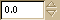

The Spin Button widget is generally used to allow the user to
select a value from a range of numeric values. It consists of a
text entry box with up and down arrow buttons attached to the
side. Selecting one of the buttons causes the value to "spin" up
and down the range of possible values. The entry box may also be
edited directly to enter a specific value.
The Spin Button allows the value to have zero or a number of
decimal places and to be incremented/decremented in configurable
steps. The action of holding down one of the buttons optionally
results in an acceleration of change in the value according to how
long it is depressed.
The Spin Button uses an W(Adjustment) object to hold information about
the range of values that the spin button can take.
The attributes of an W(Adjustment) are used by the Spin Button in the
following way:
<ul><li>value: initial value for the Spin Button</li>
<li>lower: lower range value</li>
<li>upper: upper range value</li>
<li>step_increment: value to increment/decrement when pressing mouse button 1 on a button</li>
<li>page_increment: value to increment/decrement when pressing mouse button 2 on a button</li>
<li>page_size: unused</li>
</ul>
The argument order for the W(Adjustment) constructor is:
value, lower, upper, step_increment, page_increment, page_size
GTK.SpinButton( GTK.Adjustment(),0.1, 1 )->set_usize(60,20)

 GTK.Socket()->steal()
GTK.Socket()->steal()